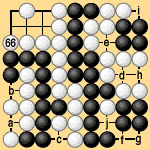
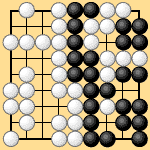

| 6.2 Final Ko (2) |
|---|
| Our fourth example (Dia. 6-4-1) shows a problem similar to the last. Traditional territory rules would end the game at White 66, but Black would have to play 'a' and 'b' before counting and the game would end in a tie. |
|  |
| Dia. 6-4-1 (66) |
|---|
|
Under area rules III: White 66, Black pass, White 'c,' Black 'a,' White 'f,' Black 'g,' White takes ko, Black 'd,' White 'h,' Black 'a,' White 'e,' Black 'b,' White 'i,' Black 'j,' White pass, Black pass (end of the game). Black wins by one point. Under territory rules I: White 66, Black pass, White 'c,' Black 'a,' White 'f,' Black 'g,' White takes ko, Black 'd,' White 'h,' Black 'a,' White pass, Black pass (preliminary end), White 'e,' Black 'b,' White 'i,' Black 'j,' White pass, Black pass (end of the game). Black wins by one point. If White ignores Black's ko threat at 'd' and plays for an exchange, Black still wins. The sequence is: White 66, Black pass, White 'c,' Black 'a,' White 'f,' Black 'g,' White takes ko, Black 'd,' White 'b,' Black 'h,' White pass, Black pass (preliminary end). Dia. 6-4-2 shows the result at this point. Black wins by one point. |
|  |
| Dia. 6-4-2 |
|---|
| Because of ko threats, in this game Black does not have to reinforce at both 'a' and 'b.' He only has to play one move at 'a.' This game also gives proof that there is no logical explanation for the traditional rule that Black must play both 'a' and 'b.' Under area rules III or territory rules I, this game is played out in a natural way. |